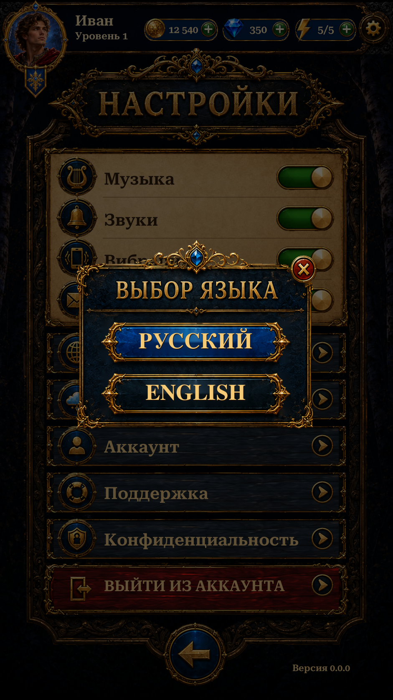

Settings · Language Modal R2
Reference-derived navy and gold frame, sapphire crest, blue selection and red Close. Native RU/EN controls with a dimmed Settings page.
Implementation and checks · Reference differences · Asset provenance · Scenario cost

Actual Unity Play Mode · 941×1672 · Russian · isolated test save.20 targeted Unity tests passed. 14 Settings captures. Scenario: 4 isolation jobs, 12CU. Existing Settings layout and Pause behavior preserved.
Live lettering and repaired textures remain approximations. Language remains session-scoped. No APK or physical-phone test.